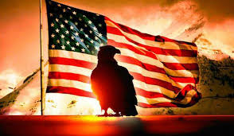

The War Addicts, com
The War in Questions
Making Sense of the Age of Carnage
By Tom Engelhardt
My first question is simple enough: After 18-plus years of our forever wars, where are all the questions?
Almost two decades of failing American wars across a startlingly large part of the planet and I’d like to know, for instance, who's been fired for them? Who’s been impeached? Who’s even paying attention?
I mean, if another great power had been so fruitlessly fighting a largely undeclared set of conflicts under the label of “the war on terror” for so long, if it had wasted trillions of taxpayer dollars with no end in sight and next to no one in that land was spending much time debating or discussing the matter, what would you think? If nothing else, you’d have a few questions about that, right?
Well, so many years later, I do have a few that continue to haunt me, even if I see them asked practically nowhere and, to my frustration, can’t really answer them myself, not to my satisfaction anyway. In fact, since 2001 -- with the exception of the months leading up to the invasion of Iraq when America’s streets suddenly filled with hundreds of thousands of demonstrators asking a range of questions ("How did USA's oil get under Iraq's sand?" was a typical protest sign of that moment) -- our never-ending wars have seldom been questioned in this country. So think of what follows not as my thoughts on the war in question but on the war in questions.
The Age of Carnage
In October 2001, in response to the 9/11 attacks, the administration of President George W. Bush launched a bombing campaign not just against al-Qaeda, a relatively small group partially holed up in Afghanistan, but the Taliban, an Islamist outfit that controlled much of the country. It was a radical decision not just to target the modest-sized organization whose 19 hijackers, most of them Saudis, had taken out almost 3,000 Americans with a borrowed “air force” of commercial jets, but in the phrase of the moment to “liberate” Afghanistan. These days, who even remembers that, by then, Washington had already fought a CIA-directed, Saudi-backed (and partially financed) war against the Soviet Union in that country for a full decade (1979-1989). To take on the Red Army then, Washington funded, armed, and supported extremist Islamist groups, some of which would still be fighting in Afghanistan (against us) in the twenty-first century.
In the context of that all-American war, a rich young Saudi, Osama bin Laden, would, of course, form al-Qaeda, or “the base.” In 1989, Washington watched as the mighty Red Army limped out of Afghanistan, the “bleeding wound” as its leader then called it. (Afghanistan wasn’t known as “the graveyard of empires” for nothing.) In less than two years, that second great power of the Cold War era would implode, an event that would be considered history’s ultimate victory by many in Washington. President Jimmy Carter’s national security adviser Zbigniew Brzezinski, the man who first committed the U.S. to its Afghan Wars, would, as last century ended, sum things up this way: “What is more important in world history? The Taliban or the collapse of the Soviet empire? Some agitated Moslems or the liberation of Central Europe and the end of the Cold War?”
Afghanistan itself would be left in ruins as Washington turned its attention elsewhere, while various local warlords fought it out and, in response, the extremist Taliban rose to power.
Now, let me jump ahead a few years. In 2019, U.S. air power expended more munitions (bombs and missiles) on that country than at any time since figures began to be kept in 2006. Despite that, during the last months of 2019, the Taliban (and other militant groups) launched more attacks on U.S.-and-NATO-trained-and-financed Afghan security forces than at any time since 2010 when (again) records began to be kept. And it tells you something about our American world that, though you could have found both those stories in the news if you were looking carefully, neither was considered worthy of major coverage, front-page headlines, or real attention. All these years later, it won’t surprise you to know that such ho-hum reporting is just par for the course. And when it comes to either of those two on-the-record realities, you certainly would be hard-pressed to find a serious editorial expression of outrage or much of anything else about them in the media.
Buy the Book!
At 18-plus years or, if you prefer to combine Washington’s two Afghan wars, 28-plus years, we’re talking about the longest American war in history. The Civil War lasted four years. The American part of World War II, another four. The Korean War less than four (though it never officially ended). The Vietnam War, from the moment the first significant contingent of U.S. advisors arrived, 14, and from the moment the first major U.S. troop contingents arrived, perhaps a decade. In the Trump era, as those air strikes rise, there has been a great deal of talk about possible “peace” and an American withdrawal from that country. Peace, however, has now seemingly come to be defined in Washington as a reduction of American forces from approximately 12,000 to about 8,500 (and that’s without counting either private military contractors or CIA personnel there).
Meanwhile, of course, the war on terror that began in Afghanistan now stretches from the Philippines across the Greater Middle East and deep into the heart of Africa. Worse yet, it still threatens to expand into a war of some sort with Iran -- and that, mind you, is under the ministrations of an officially “antiwar” president who has nonetheless upped American military personnel in the Middle East to record levels in recent years.
Of course, this is a story that you undoubtedly know fairly well. Who, in a sense, doesn’t? But it’s also a story that, so many years and so much -- to use a word once-favored by our president -- “carnage” later, should raise an endless series of disturbing and unnerving questions here. And that it doesn’t, should raise questions in itself, shouldn’t it?
Still, in a country where opposition to endless war seems constantly to falter or fade out amid a media universe in which Donald Trump’s latest tweet can top any war news, it seems potentially useful to raise some of those questions -- at least the ones that occur to me -- and perhaps for you to do the same. Isn’t it time, after all, for Americans to ask a few questions about war, American-style, in what might be thought of as the post-9/11 age of carnage?
In any case, here are six of mine to which, as I said, I don’t really have the answers. Maybe you do.
Here goes:
1. When the Bush administration launched that invasion and occupation of Afghanistan in 2001 and followed it up with an invasion and occupation of Iraq in 2003, did we, in some curious fashion, really invade and occupy ourselves? Of course, in these years, across the Greater Middle East and Africa, the U.S. played a remarkable role in creating chaos in country after country, leading to failed states, displaced people in staggering numbers, economic disarray, and the spread of terror groups. But the question is: Did the self-proclaimed most exceptional and indispensable nation on the planet do a version of the same thing to itself in the process? After all, by 2016, the disarray in this country was striking enough and had spread far enough, amid historic economic inequality, social division, partisan divides, and growing anger, that Americans elected as president (if not quite by a majority) a man who had run not on American greatness but on American decline. He promised to make this country great again. (His declinist credentials were not much noted at the time, except among the heartland Americans who voted for him.) So, ask yourself: Would President Donald Trump have been possible if the Bush administration had simply gone after al-Qaeda on September 12, 2001, and left it at that? Since January 2017, under the tutelage of that “very stable genius,” the U.S. political (and possibly global economic) system has, of course, begun to crack open. Is there any connection to those forever wars?
2. Has there ever been a truly great power in history, still at or near the height of its militarily prowess, that couldn’t win a war? Sure, great imperial powers from the Romans to the Chinese to the British sometimes didn’t win specific wars despite their seeming military dominance, but not a single one? Could that be historically unprecedented and, if so, what does it tell us about our moment? How has the country proclaimed by its leaders to have the finest fighting force the world has ever known won nothing in more than 18 years of unceasing global battle?
3. How and why did the “hearts and minds” factor move from the nationalist left in the twentieth century to the Islamist right in the twenty-first? The anti-colonial struggles against imperial powers that culminated in America’s first great losing war in Vietnam (think of Korea as kind of a tie) were invariably fought by leftist and communist groups. And whatever the military force arrayed against them, they regularly captured -- in that classic Vietnam-era phrase -- “the hearts and minds” of what were then called “Third World” peoples and repeatedly outlasted far better armed powers, including, in the case of Vietnam, the United States. In a word, they had the moxie in such conflicts and it didn’t matter that, by the most obvious measures of military power, they were at a vast disadvantage. In the twenty-first century, similar wars are still being fought in a remarkably comparable fashion, Afghanistan being the most obvious. Again, the weaponry, the money, everything that might seem to pass for the works has been the property of Washington and yet that ability to win local “hearts and minds” has remained in the hands of the rebels. But what I wonder about is how exactly that moxie passed from the nationalist left to the extremist religious right in this century and what exactly was our role, intended or not, in all this?
4. When it comes to preparations for war, why can’t we ever stop? After all, when the Soviet Union collapsed and the Cold War ended in 1991, the United States essentially had no enemies left on the planet. Yet Washington continued essentially an arms race of one with a finish line so distant -- the bomber of 2018, Earth-spanning weapons systems, and weaponry for the heavens of perhaps 2050 -- as to imply eternity. The Pentagon and the military-industrial complex surrounding it, including mega-arms manufacturers, advanced weapons labs, university science centers, and the official or semi-official think tanks that churned out strategies for future military domination, went right on without an enemy in sight. In fact, in late 2002, preparing for his coming invasion of Iraq, George W. Bush had to cook up an “axis of evil” -- Iran, Iraq, and North Korea, two of which were mortal enemies and the third unrelated in any significant way to either of them -- as a justification for what was to come, militarily speaking. Almost 20 years later, investing as much in its military as the next seven countries combined, updating and upgrading its nuclear arsenal to the tune of $1.7 trillion in the coming decades (and having just deployed a new "low-yield" nuclear weapon), and still investing staggering sums in its planes, tanks, aircraft carriers, and the like, the U.S. military now seems intent (without leaving its forever wars) on returning to the era of the Cold War as well. Face-offs against Russia and China are now the military order of the day in what seems like a déjà-vu-all-over-again situation. I’m just curious, but isn’t it ever all over?
5. How can Washington's war system and the military-industrial complex across the country continue to turn failure in war into success and endless dollars at home? Honestly, the one thing in America that clearly works right now is the U.S. military (putting aside those wars abroad). We may no longer invest in domestic infrastructure, but in that military and the giant corporate weapons makers that go with it? You bet! They are the true success stories of the twenty-first century if you’re talking about dollars invested, weaponry bought, and revolving doors greased. On the face of it, failure is the new success and few in this country seem to blink when it comes to any of that. How come?
6. Why doesn't the reality of those wars of ours ever really seem to sink in here? This, to my mind, is at least partially a question about media coverage. Yes, every now and then (as with the Washington Post’s Afghanistan Papers last December), America’s forever wars briefly break through and get some attention. And yes, if you’re a war-coverage news jockey, you can find plenty of daily reports on aspects of our wars in the media. But isn’t it surprising how much of that coverage is essentially a kind of background hum, like Muzak in an elevator? Unless the president personally decides to drone assassinate an Iranian major general and prospective future leader of that country, our wars simply drone on, barely attended to (unless, of course, you happen to be in the U.S. military or a military spouse or child). Eighteen years of failed wars and so many trillions of dollars later, wouldn’t you have expected something else?
So those are my six questions, the most obvious things that puzzle me about what may be the strangest aspect of this American world of ours, those never-ending wars and the system that goes with them. To begin to answer them, however, would mean beginning to think about ourselves and this country in a different way.
Perhaps much of this would only make sense if we were to start imagining ourselves or at least much of the leadership crew, that infamous “Blob,” in Washington, as so many war addicts. War -- the failing variety -- is evidently their drug of choice and not even our “antiwar” president can get off it. Think of forever war, then, as the opioid not of the masses but of the ruling classes.